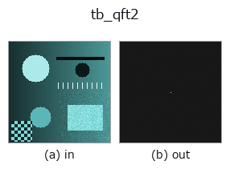

typed op• Data kinds: qimage → qimage
• Call: fullseye.apply(img, "tb_qft2", a=0.5, b=0.5) (the 2-D model is one image plus two scalar knobs a,b∈[0,1])

*The figure is the actual output on a synthetic 128×128 input. Left: input, right: output. Point clouds are drawn as a top-down scatter (brightness = z), 1-D series as a line plot, volumes as the maximum-intensity projection along z, videos as the middle frame, complex images as magnitude; return values that are not pictures are shown as the values themselves.*
*Knob a does not change the output (measured: identical at 0.1 / 0.5 / 0.9).*
*Knob b does not change the output (measured: identical at 0.1 / 0.5 / 0.9).*
Stages (the ops that come before → this op, left to right):
▸ tb_qft2: stages (docs site)
On other images (synthetic scene / photo / coins. Top row: inputs, bottom row: their outputs. Knobs at default):
▸ tb_qft2: other inputs (docs site)
Quaternion (hypercomplex) 2-D Fourier transform. → (H, W, 4) centred spectrum.
The colour analogue of `complexops.cx_fft`: a colour image is transformed
as one hypercomplex signal rather than three unrelated real ones. The
kernel is `exp(-mu * 2*pi*(u*x/W + v*y/H))` for a unit pure quaternion
*mu* (default: the grey axis of RGB, Sangwine's choice), and because
quaternions do not commute the kernel can be applied on either side:
• `side="left" — F[u,v] = sum_{x,y} E(x,y,u,v) * f[x,y]`
• `side="right" — F[u,v] = sum_{x,y} f[x,y] * E(x,y,u,v)`
The argument is required. Left and right are not a sign convention. On
the fuzzer's `(32, 32)` dichromatic render they differ by
`max|F_L - F_R| = 19.11 against a peak modulus of 1045` (1.8 % of full
scale) and on a random colour field by `33.35 against 892.9` (3.7 %; another seed
gives 34.05 against 892) —
with no exception and no NaN to mark the difference. **Mixing them across a
round trip is much worse**, because there the disagreement is not attenuated
by the spectrum's dynamic range: `iqft2(qft2(q, "left"), "right")` returns
an image whose error reaches `1.113 on data whose own range is 0.9994`
— a completely different picture that still looks like a picture. (On the
grey-axis-dominated dichromatic render the same mistake costs only `0.054`
against a range of `1.076`, which is the dangerous case: a 5 % error is
exactly the size that survives a visual check.)
The spectrum is returned centred (DC at the array centre, via
`fftshift), matching the convention complexops.cx_fft` established for
the `cimage sort. :func:iqft2` un-centres before inverting, and the round
trip is exact: measured `max|iqft2(qft2(q, s), s) - q| = 2.22e-15` for both
sides on a standard-normal `(32, 32, 4)` field.
How it is computed, and why that is not a shortcut
--------------------------------------------------
Every quaternion splits as `q = A + B*nu with A, B` in the commutative
subfield generated by `mu` (the *symplectic decomposition*, Ell &
Sangwine 2007). The kernel commutes with `A` and *anti*-commutes past
`nu`, so the whole transform reduces to two ordinary complex FFTs — for
the left transform both with the standard kernel, for the right one of them
with the conjugate kernel. **That reduction is what makes left and right
differ**, and it is verified against a brute-force `O(N^2)` quaternion DFT
written straight from the definition, on a 4x4 image, for three different
`mu` and both sides: the largest disagreement over all six combinations is
8.2e-15. The fast path is checked against the definition, not against
itself. The choice of the internal `nu` is likewise verified not to matter
(two different `nu, max difference 1.4e-14 — see :func:_mu_basis`).
Honest accounting against the channelwise baseline
--------------------------------------------------
Because the decomposition above is *linear* in the channels, the QFT is a
fixed recombination of the three per-channel complex FFTs: rebuilding
`qft2(q, "left") from three numpy.fft.fft2` calls on the R, G and B
planes agrees to `max|err| = 1.14e-13`. So this transform **buys no
information a channelwise FFT does not already contain**, and this module
does not claim it does. It also does not buy speed — it moves four real
transforms' worth of data where the channelwise route moves three, and pays
for the symplectic pack/unpack on top: measured on `(256, 256)`, best of
20, 8.246 ms against 3.409 ms, i.e. 2.42x slower (run to run, 2.3x-2.4x). What it buys is that
the four numbers stay one algebraic object, so a rotor can be applied to the
spectrum and the colour meaning of `mu` survives the transform.
Raises `ValueError: *qimage* is not a valid (H, W, 4)` field;
*side* is not `'left' / 'right'`; *mu* is not a finite non-zero
3-vector.
Typed bridge of the quat op `qft2 into the 2-D evolution registry: the same implementation, called under the op(v, a, b) convention. This op has no tunable parameter; a and b` are unused.
• Sample-data catalog (download URLs / licences) — 2-D uses skimage.data (BSD/public domain) plus synthetic images; 3-D lists download URLs for real data sources (Stanford, PDS, …).
• Operator provenance and references — the sources of the research/methods this op family came from.
The program below has been verified to run (same input as the figure). In Studio's help this block becomes buttons that load and run it on the spot.
img_to_rgb 0.50 0.50 tb_rgb_to_quaternion 0.50 0.50 tb_qft2 0.50 0.50
▸ Load this pipeline · Load & run
The examples below call the underlying ledger op qft2. This bridge op is the same implementation adapted to the fn(v, a, b) convention, so the behaviour carries over unchanged (only the call form differs).
• quaternion_monogenic — py -3.11 examples/quaternion_monogenic.py
qimage as input)identity · tb_quaternion_to_rgb · tb_quat_norm · tb_quat_conjugate_image · tb_quat_normalize_image · tb_monogenic_amplitude · tb_monogenic_phase · tb_monogenic_orientation
typed)tb_points_to_voxel · tb_estimate_point_normals · tb_iss_keypoints · tb_angle_3points · tb_project_points · tb_render_point_depth · tb_statistical_outlier_removal · tb_radius_outlier_removal
*Provenance: ops.py — 2D operator registry. This per-op note is generated by tools/opdocs.py md (do not hand-edit).*
© 2026 Kazufumi Furuse — Fullseye operator documentation. Licensed under Apache-2.0.
{kind=link}
{kind=link}